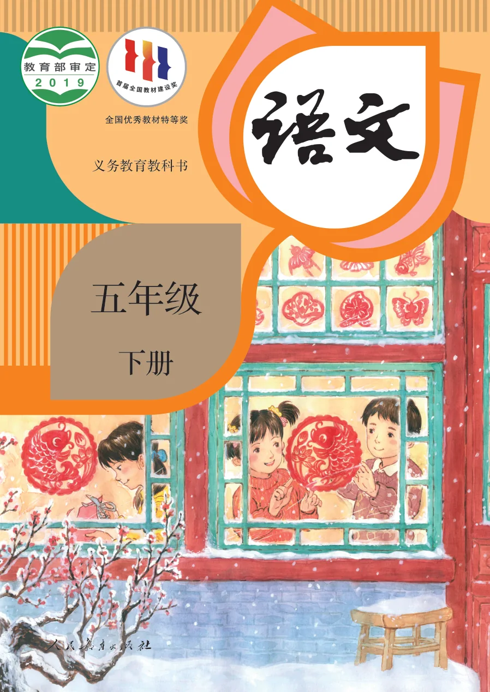

Enhanced HTML · 离线学习版
五年级语文下册
分课整理、完整保留教材原页图片，支持移动端、章节菜单、上一课/下一课导航、字号调整和深色模式。
搜索课文
从第1课开始
附录与学习园地
第1单元
童年往事
01
古诗三首
课本第 2–3 页
→
02
祖父的园子
课本第 4–7 页
→
03
月是故乡明
课本第 8–9 页
→
04
梅花魂
课本第 10–12 页
→
第2单元
古典名著之旅
05
草船借箭
课本第 18–21 页
→
06
景阳冈
课本第 22–27 页
→
07
猴王出世
课本第 28–30 页
→
08
红楼春趣
课本第 31–34 页
→
第3单元
遨游汉字王国
第4单元
家国情怀
09
古诗三首
课本第 54–55 页
→
10
青山处处埋忠骨
课本第 56–58 页
→
11
军神
课本第 59–62 页
→
12
清贫
课本第 63–64 页
→
第5单元
人物描写
13
人物描写一组
课本第 70–73 页
→
14
刷子李
课本第 74–77 页
→
第6单元
思维与智慧
15
自相矛盾
课本第 84–84 页
→
16
田忌赛马
课本第 85–86 页
→
17
跳水
课本第 87–88 页
→
第7单元
世界风光
18
威尼斯的小艇
课本第 94–96 页
→
19
牧场之国
课本第 97–98 页
→
20
金字塔
课本第 99–102 页
→
第8单元
语言的幽默与智慧
21
杨氏之子
课本第 108–108 页
→
22
手指
课本第 109–111 页
→
23
童年的发现
课本第 112–114 页
→
附录
综合学习内容
附
附录与学习园地
口语交际、习作、语文园地、综合性学习、字词表等
→